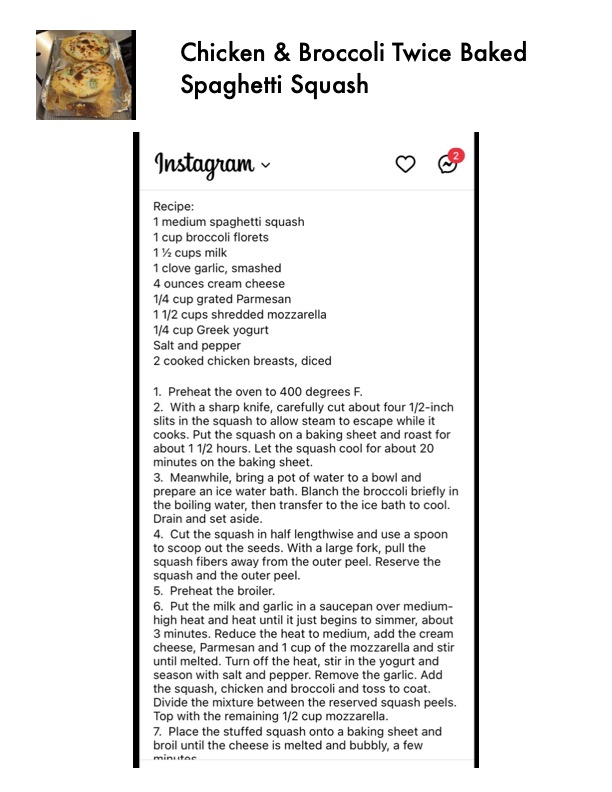

Chicken & Broccoli Twice Baked

Original cookbook page 497
Ingredients
- 1 medium spaghetti squash
- 1 cup broccoli florets
- 1 clove garlic, smashed
- 4 ounces cream cheese
- 1/4 cup grated Parmesan
- 11/2 cups shredded mozzarella
- 41/4 cup Greek yogurt
- 2 cooked chicken breasts, diced
- 3 minutes. Reduce the heat to medium, add the crear
Instructions
- Preheat the oven to 400 degrees F. With a sharp knife, carefully cut about four 1/2-inc Meanwhile, bring a pot of water to a bowl and prepare an ice water bath. Blanch the broccoli briefly Drain and set aside. Cut the squash in half lengthwise and use a spoor Preheat the broiler. Put the milk and garlic in a saucepan over mediurr season with salt and pepper. Remove the garlic. Add Top with the remaining 1/2 cup mozzarella. Place the stuffed squash onto a baking sheet and broil until the cheese is melted and bubbly, a few
Recipe #497 from collection